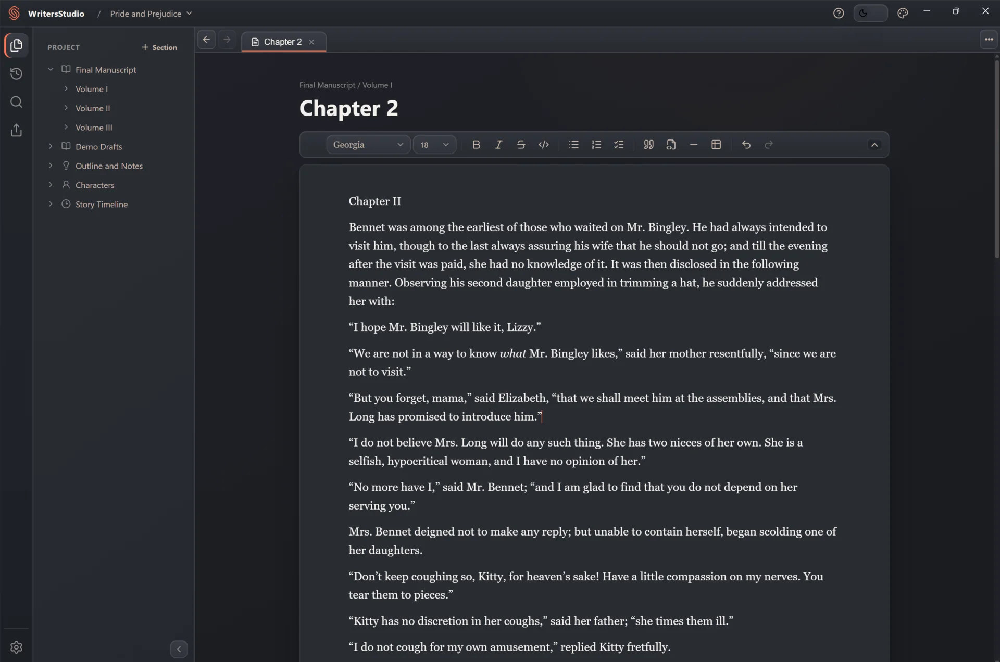
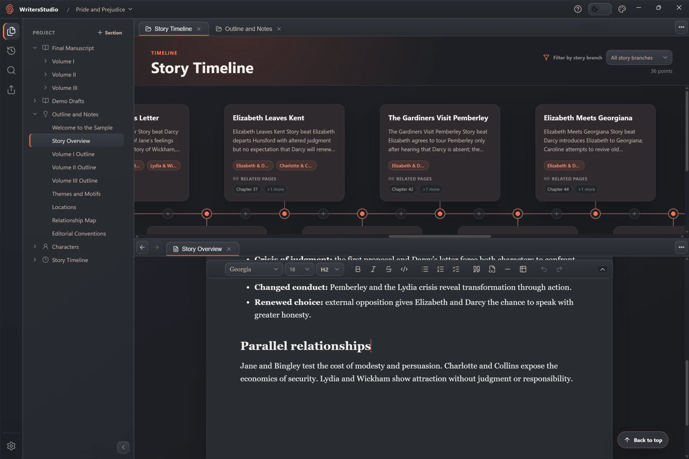

Write naturally
Prose first. Markup invisible.
Shape text in a visual Markdown editor, keep scenes beside their notes, and move between open pages without losing your place.
- Focused visual editing
- Tabs and split views
- Project-wide search
Version control, made for writers
Write the manuscript, shape the world around it, and revise without fear. WritersStudio gives you Git-powered autosaves and story branches—without the terminal, jargon, or project-management overhead.

Everything in its place
A manuscript is more than pages. WritersStudio gives the prose, people, places, plans, and turning points a shared home—so you can stay inside the story.
Write naturally
Shape text in a visual Markdown editor, keep scenes beside their notes, and move between open pages without losing your place.
Organize your way
Arrange chapters, scene fragments, research, and outlines around the way you actually work. The structure can grow with the book.
Know your cast
Build profiles with the details that matter to your story, then connect them back to the pages where choices and relationships unfold.
See the shape
Trace events in story order, follow narrative threads, and move from a timeline beat straight to the manuscript pages it changes.
Local-first by design
WritersStudio works without an account and without an internet connection. Your projects stay in ordinary folders on your computer, in formats made to move.
Choose where every project lives. Updating or removing the app never removes your project folders.
Manuscript text stays in Markdown, with structured project files you can copy and back up yourself.
Send selected sections to DOCX or PDF, and make a portable ZIP copy whenever you want one.
Think beside the page
Open a timeline above the scene it shapes. Keep a character beside a difficult conversation. WritersStudio turns the workspace into a quiet story room.
Explore the complete sample project
Two views · one train of thoughtNo trial. No subscription.
Download WritersStudio, open a project, and write. No account is required. Future WritersStudio Cloud services will be optional and separate.
Public preview builds may be unsigned, so Windows can show a SmartScreen warning. Only download installers from this official repository; never disable system-wide protection.
macOS is a planned platform. Until an official asset appears above, WritersStudio is not available for download on macOS.
Release information comes directly from the official GitHub repository.
TO BE DONEWritersStudio Cloud is in development
Later, if you want it
WritersStudio Cloud is planned as a future paid service for multi-device sync and off-device backup. The local desktop studio will remain free—and it will never need Cloud to open, edit, or export your work.
Good to know
Yes. WritersStudio for desktop is free to download and use, and it will remain free. A future optional Cloud service may be paid.
No account is required. Writing, editing, search, export, and local History work offline. Internet access is only needed to download releases and for future optional online services.
In a project folder you choose on your computer. Manuscript content is stored in portable Markdown alongside structured WritersStudio project files.
No. Your project folders are outside the application's uninstall target and remain yours.
No. The public GitHub repository hosts official installers, release notes, and a complete sample project; it does not contain or license the application source code.
The download center above reflects the official GitHub assets in real time. Windows is the first public platform; macOS will appear there when its first build is ready.
The next chapter is yours
No trial · No account · Your files stay local